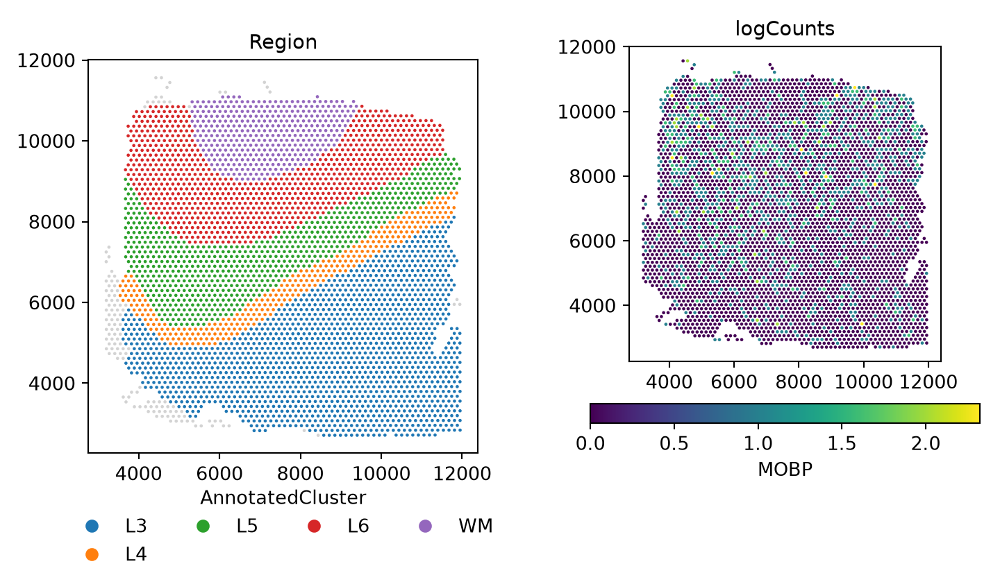

SpaNorm is a spatially aware library size normalisation method that removes library size effects, while retaining biology. Library sizes need to be removed from molecular datasets to allow comparisons across observations, in this case, across space. Bhuva et al. (Bhuva et al. 2024) and Atta et al. (Atta et al. 2024) have shown that standard single-cell inspired library size normalisation approaches are not appropriate for spatial molecular datasets as they often remove biological signals while doing so. This is because library size confounds biology in spatial molecular data.
The SpaNorm workflow: SpaNorm takes the gene expression data and spatial coordinates as inputs. Using a gene-wise model (e.g., Negative Binomial (NB)), SpaNorm decomposes spatially-smooth variation into those unrelated to library size (LS), representing the underlying true biology and those related to library size. The adjusted data is then produced by keeping only the variation unrelated to library size.
SpaNorm uses a unique spatially constrained modelling approach to model gene expression (e.g., counts) and remove library size effects, while retaining biology. It achieves this through three key innovations:
Optimal decomposition of spatial variation into spatially smooth library size associated (technical) and library size independent (biology) variation using generalized linear models (GLMs).
Computing spatially smooth functions (using thin plate splines) to represent the gene- and location-/cell-/spot- specific size factors.
Adjustment of data using percentile adjusted counts (PAC) (Salim et al. 2022), as well as other adjustment approaches (e.g., Pearson).
Every step below is shown in R and in Python. Pick a language in any tab and all tabs on the site follow. To keep this page quick to build, the model is fit on 5% of the spots (sample.p = 0.05 in R, sample_p=0.05 in Python) with a low-complexity spatial function (df.tps = 2, df_tps=2). The defaults (0.25 and 6) are better for real analyses. The R and Python results agree qualitatively but not exactly, as the two use different random number streams for spot sampling.
if (!requireNamespace("BiocManager", quietly =TRUE))install.packages("BiocManager")# release versionBiocManager::install("SpaNorm")# development version from GitHubBiocManager::install("BhuvaLab/SpaNorm")
We begin by loading some example 10x Visium data profiling the dorsolateral prefrontal cortex (DLPFC) of the human brain. The data has ~4,000 spots and covers genome-wide measurements. The example data here is filtered to remove lowly expressed genes (using filterGenes(HumanDLPFC, prop = 0.1)). This filtering retains genes that are expressed in at least 10% of cells. In R the data ship with the package. In Python the same data are read from an h5ad file exported from the R object, with raw counts in X and coordinates in obsm["spatial"].
The filter function returns a logical vector indicating which genes should be kept (filterGenes() in R, filter_genes() in Python, which by default subsets the object in place).
# keep genes expressed in >= 20% of spots (in place)keep = sn.filter_genes(adata, prop=0.2, inplace=False)print(f"kept {keep.sum()} of {keep.size} genes")#> kept 2508 of 5076 genesadata = adata[:, keep].copy()adata#> AnnData object with n_obs × n_vars = 4015 × 2508#> obs: 'AnnotatedCluster', 'cell_count'#> uns: 'X_name'#> obsm: 'spatial'#> layers: None (.X)
The log-transformed raw counts are visualised below for the gene MOBP which is a marker of oligodendrocytes enriched in the white matter (WM) (Maynard et al. 2021). Despite being a marker of this region, we see that it is in fact absent from the white matter region.
# keep the raw log counts: spanorm() writes its result to layers["logcounts"]adata.layers["log2counts"] = np.log2(adata.X +1)def mobp_panel(layer, title, ax): sn.pl.plot_spatial(adata, what="expression", color="MOBP", layer=layer, size=3, ax=ax) ax.set_title(title)fig, axs = plt.subplots(1, 2, figsize=(7.5, 4.25))sn.pl.plot_spatial(adata, what="annotation", color="AnnotatedCluster", size=3, ax=axs[0])axs[0].set_title("Region")mobp_panel("log2counts", "logCounts", axs[1])fig.tight_layout()plt.show()

Normalise count data
SpaNorm normalises data in two steps: (1) fitting the SpaNorm model of library sizes; (2) adjusting data using the fit model. A single call to the SpaNorm() function (spanorm() in Python) is enough to run these two steps. To speed up computation, the model is fit using a smaller proportion of spots/cells (default is 0.25). This can be modified using the sample.p (sample_p) parameter.
The output (which can be switched off by setting verbose = FALSE) shows the two steps of normalisation. In the model fitting step, a subset of cells/spots is used to fit the negative binomial (NB) model. The output shows that the fit is performed by alternating between estimation of the dispersion parameter and estimation of the NB parameters by fixing the dispersion, and that each intermediate fit converges, and so does the final fit. The accuracy of the fit can be controlled by modifying the tolerance parameter tol (default 1e-4).
Next, data is adjusted using the fit model. The following approaches are implemented for count data:
adj.method = "logpac" (default) - percentile adjusted counts (PAC) which estimates the count for each gene at each location/spot/cell using a model that does not contain unwanted effects such as the library size.
adj.method = "pearson" - Pearson residuals from factoring out unwanted effects.
adj.method = "meanbio" - the mean of each gene at each location estimated from the biological component of the model.
adj.method = "medbio" - the median of each gene at each location estimated from the biological component of the model.
In Python the argument is adj_method. These data are stored in the logcounts assay of the SpatialExperiment object (R) or the logcounts layer of the AnnData (Python). After normalisation, we see that MOBP is enriched in the white matter.
For large datasets, the normalisation step can be parallelised across workers. In R, use the BPPARAM argument, which accepts any BiocParallelParam object from the BiocParallel package (serial by default). In Python, use n_jobs. Results are identical regardless of the number of workers. These chunks are shown but not run here.
library(BiocParallel)# parallelise normalisation across 4 workersHumanDLPFC =SpaNorm(HumanDLPFC, BPPARAM =MulticoreParam(workers =4))
# parallelise normalisation across 4 workerssn.spanorm(adata, n_jobs=4)
When the counts assay is a DelayedArray (for example, a disk-backed HDF5Array), SpaNorm in R automatically normalises the data in blocks so that the full matrix is never loaded into memory at once. This is detected from the data and needs no additional arguments, and the results are identical to the in-memory path. When combining the two, prefer BiocParallel::SnowParam() over MulticoreParam() for a disk-backed DelayedArray: fork-based workers each inherit a copy of the same open file handle, which can cause HDF5Array reads from concurrent forked workers to fail or return incorrect data. In Python, matrices are held as in-memory (dense or sparse) arrays.
library(HDF5Array)# wrap the counts as a disk-backed DelayedArraycounts(HumanDLPFC) =writeHDF5Array(counts(HumanDLPFC))# normalisation now runs block-wise, bounding peak memoryHumanDLPFC =SpaNorm(HumanDLPFC)
Not applicable: AnnData counts are held in memory, dense or sparse.
When using the optional GPU backend (backend = "gpu" or "auto"; in R this requires the torch package and a CUDA or Apple Silicon/Metal device, in Python a PyTorch build for your device), SpaNorm automatically detects the available accelerator memory and, for datasets too large to fit on-device at once, fits the model in gene-blocks so peak GPU memory stays bounded. This needs no additional arguments, and results match the CPU path within a small numerical tolerance from floating-point summation order. The detected memory budget can be overridden if needed.
# override the auto-detected GPU memory budget (bytes) if neededHumanDLPFC =SpaNorm(HumanDLPFC, backend ="gpu", gpu.mem.budget =4*1024^3)
# runs on CUDA (or Apple Metal in float32) when availablesn.spanorm(adata, backend="gpu")sn.spanorm_svg(adata, backend="gpu")# memory budget of the batched polish engine, per worker (bytes)sn.settings.polish_mem_budget =4e9
The Python port was verified and timed on one NVIDIA H100 PCIe (MIG 4g.40gb slice) with 8 CPU cores and 64 GB, using torch 2.6.0+cu124. The table gives wall-clock seconds for the full HumanDLPFC data (4015 spots x 2508 genes after filterGenes(prop = 0.2)), one job, with CPU runs using 8 torch threads. The jobs shared the node with a test run, so the timings are indicative only.
function
CPU (s)
GPU (s)
speed-up
spanorm
77.7
28.9
2.7x
spanorm_svg
13.8
10.8
1.3x
The remaining time in spanorm on the GPU is host work with no device path in R either: the quick-cluster size factors, the edgeR dispersion estimation and qnbinom. R and Python follow the same algorithm on both devices, so the CPU references apply to both. The R GPU path itself has not been run on an accelerator. The scripts and details are in docs/benchmark.md of the spanormpy repository.
Using Seurat objects
In R, users may prefer to work with Seurat. The SpatialExperiment object can be converted to Seurat (v5) with spatial coordinates added, and SpaNorm() can then be run directly on the Seurat object. The counts assay is used to store raw counts and the data assay is used to store normalised values, following Seurat conventions. SpaNorm searches for coordinates in the images slot which contains the coordinates slot. If not found, it will also search the meta.data slot of the Seurat object with names x and y, or with names imagecol and imagerow. This is the order of the search of coordinates. In Python, AnnData is the native container, so there is no conversion step.
library(Seurat)# create a Seurat object with the dataseurat_obj = HumanDLPFClogcounts(seurat_obj) =counts(seurat_obj)seurat_obj =suppressWarnings(Seurat::as.Seurat(seurat_obj))# add spatial coordinates to Seurat meta.data from SpatialExperimentcoords = SpatialExperiment::spatialCoords(HumanDLPFC)seurat_obj@meta.data$x = coords[, 1]seurat_obj@meta.data$y = coords[, 2]# run SpaNorm on Seurat (CPU backend)seurat_obj <-SpaNorm(seurat_obj, sample.p =0.1, df.tps =2, backend ="cpu", verbose =TRUE)seurat_obj
Not applicable: call sn.spanorm(adata) on the AnnData directly. A Seurat object can be converted to AnnData with the usual tools (for example anndata2ri or h5ad export).
Computing alternative adjustments using a precomputed SpaNorm fit
As no appropriate slot exists for storing model parameters in a SpatialExperiment, the fit is saved in the metadata slot with the name “SpaNorm”. In Python the fit lives in the AnnData itself (var, varm, obsm, and scalars in uns["spanorm"]). Subsetting features (i.e., genes) or observations (i.e., cells/spots/loci) in R does not subset the model, so SpaNorm realises that the model no longer matches the data and re-estimates when called. If instead the model is valid for the data, the existing fit is extracted and reused.
The fit can be manually retrieved as below for users wishing to reuse the model outside the SpaNorm framework. Otherwise, calling SpaNorm() on an object containing the fit will automatically use it.
# scalars of the fit and the per-gene coefficientsprint({k: v for k, v in adata.uns["spanorm"].items() if np.ndim(v) ==0})#> {'spanorm': {'ngenes': 2508, 'ncells': 4015, 'gene_model': 'nb', 'df_tps': array([2, 2, 1, 1]), 'sample_p': 0.05, 'lambda_a': array([0.0001, 0.0001]), 'wtype': array(['ls', 'biology', 'biology', 'biology', 'biology', 'ls'],#> dtype='<U7'), 'loglik': array([-499834.23568236, -499488.55420576, -499487.71443846]), 'psi_max': 0.13419746539185973, 'batch': {'kind': 'none'}, 'colnames': array(['logLS', 'bs.xy.bio1', 'bs.xy.bio2', 'bs.xy.bio3', 'bs.xy.bio4',#> 'logLS:bs.xy.ls'], dtype='<U14')}, 'adj_method': 'auto'}print(adata.varm.keys(), adata.obsm.keys())#> KeysView(AxisArrays with keys: 'spanorm_alpha') KeysView(AxisArrays with keys: 'spatial', 'spanorm_W')
When a valid fit exists in the object, only the adjustment step is performed. The model is recomputed if overwrite = TRUE or any of the following parameters change: degrees of freedom (df.tps), penalty parameters (lambda.a), object dimensions, or batch specification. Alternative adjustments can be computed as below and stored to the logcounts assay (layer).
The mean biology adjustment shows a significant enrichment of the MOBP gene in the white matter. As the overall counts of this gene are low in this sample, other methods show less discriminative power.
Varying model complexity
The complexity of the spatial smoothing function is determined by the df.tps (df_tps) parameter where larger values result in more complicated functions (default 6). Here we compare the fit used above (2) with a more flexible one (4).
As the counts for the MOBP gene are very low, we see artifacts in the adjusted counts. As we have a model for the genes, we can increase the signal by adjusting all means by a constant factor. Applying a scale factor of 4 shows how the adjusted data are more continuous, with significant enrichment in the white matter.
The plotCovariate() function (pl.plot_covariate() in Python) can be used to explore the learnt functions. We could study what the model has learnt about the biology and library size effects of the MOBP gene.
The SpaNormSVG() function (spanorm_svg() in Python) can be used to identify spatially variable genes (SVGs) in the data. This function fits a nested model without the biological function of the form:
where \(\mu_{c,g}\) is the mean of gene \(g\) at location \(c\), \(\varsigma_{g}\) is the log-mean of gene \(g\), \(h_g(x_c, y_c)\) is a smooth function of the spatial coordinates \(x_c\) and \(y_c\) representing the library size effect, and \(\alpha\) is the log-mean of the library size.
The function fits this model and then uses an F-test to identify spatially variable genes.
SpaNorm() fits every gene in one shared IRLS loop: a single gene-averaged cell weight vector, one convergence check on the aggregate log-likelihood, and coefficients that are clamped together across genes. For most genes the result is indistinguishable from that gene’s own optimum, but a bright, spatially restricted gene can be left well short of it, and its dispersion, estimated at that point, inflated. polishSpaNorm() (polish_spanorm() in Python) takes the fitted object and converges each gene separately, by damped Newton on its own penalised negative binomial log-likelihood, then rewrites the normalised assay from the polished coefficients. The default, psi.method = "fixed", converges each gene’s mean at the dispersion SpaNorm() estimated and keeps that dispersion; psi.method = "profile" re-estimates the dispersion by profile maximum likelihood at the converged mean.
Polishing the fit together with its SVG null (null = TRUE, the default) takes about half a minute or more on one core, which is more than this page’s build budget, so the chunks above are shown but not evaluated. The arguments are documented in the reference for polishSpaNorm() (R) and polish_spanorm() (Python). The main options are:
Argument (R / Python)
Choices
Effect
psi.method / psi_method
"fixed" (default), "profile"
"fixed" converges each gene’s mean at the dispersion SpaNorm() estimated and keeps it. "profile" re-estimates the dispersion by profile maximum likelihood at the converged mean and re-polishes.
ls
"fixed" (default), "joint"
"fixed" holds the shared a1 at SpaNorm()’s value. "joint" re-estimates it over the polished genes.
cells
"all" (default), "fit"
Polish on all cells, or only on the cells SpaNorm() sampled for the fit.
null
TRUE / True (default)
Also polish the stored SVG null model so it stays paired with the full fit.
engine
"batch" (default), "gene"
The batched Newton engine is the only one available on an accelerator.
backend
"cpu" (default), "auto", "gpu"
Device for the batched engine.
overwrite
FALSE / False
Allow re-polishing an already-polished fit, starting from the unpolished one kept alongside it.
A gene with no counts in the polished cells, or none in the polished cells of one batch level, is held out: it keeps its input fit and is flagged as not polished, with the reason recorded. A warning also counts any gene the Newton engine could not polish. In Python the per-gene diagnostics are stored in adata.var (columns prefixed spanorm_polish_, for example spanorm_polish_polished and spanorm_polish_held_out); in R they are the genes data frame in the polish slot of the stored fit.
If the SVG test has already been run, polishing re-polishes the stored null model to match (null = TRUE is the default) and drops the now-stale SVG statistics with a warning, so rerun the SVG step afterwards. The full and null fits must always be estimated the same way for the SVG likelihood-ratio test to compare nested models. Either polish before calling the SVG function, or call it directly on an unpolished fit and let it pair the null itself.
By default (ls = "fixed") the shared library-size coefficient a1 is held at SpaNorm()’s value while every other coefficient is converged; ls = "joint" re-estimates a1 itself, at the optimum of the total penalised likelihood over the polished genes. ls = "fixed" is the default because SpaNorm()’s own a1 is an unweighted mean over genes, where the joint estimate is information-weighted and so dominated by the brightest genes: it changes the estimand, not only its precision, and mostly renormalises the shallowest (lowest-library-size) cells.
GLM-PCA
PCA on log-transformed counts has been shown to distort low dimensional features in single-cell datasets (Townes et al. 2019). As spatial transcriptomics data follows similar distributions, this is also the case for spatial transcriptomics data. GLM-PCA which computes PCA directly on the counts is a better approach to perform PCA on spatial transcriptomics data. While the GLM-PCA algorithm itself is computationally intensive, an approximation proposed in the original manuscript is to fit a null model to the data and perform PCA on the deviance or Pearson residuals. This null model is the one fit above to estimate SVGs. SpaNorm implements the GLM-PCA approximation using the SpaNormPCA() function (spanorm_pca() in Python). Users can specify the features to use from the SVG calling, using cutoffs for the top SVGs to use (recommended) or using a FDR cutoff. The interface is similar to scater::runPCA() and the results are stored in the reducedDim slot (R) or obsm (Python, "X_spanorm_pca"). This function should always be run after calling SVGs.
SpaNorm’s underlying negative binomial fitting engine is also available as a standalone, general-purpose per-gene GLM fitter via fitNB() (fit_nb() in Python). This is useful for packages that want SpaNorm’s IRLS fitting machinery (per-gene dispersion estimation, ridge regularisation, robust winsorisation) over their own design matrix, rather than SpaNorm’s spatial (library-size/biology) model. Unlike SpaNorm(), fitNB() fits log(mu) = W %*% t(alpha) directly, with no built-in intercept; include a column of ones in W if a per-gene baseline is required.
import importlib.metadata as im, platformprint("python", platform.python_version())#> python 3.12.15for p in ["spanormpy", "anndata", "scanpy", "numpy", "torch", "matplotlib"]:print(p, im.version(p))#> spanormpy 0.1.0#> anndata 0.13.4#> scanpy 1.12.4#> numpy 2.5.4#> torch 2.14.1+cpu#> matplotlib 3.11.2
References
Atta, Lyla, Kalen Clifton, Manjari Anant, Gohta Aihara, and Jean Fan. 2024. “Gene Count Normalization in Single-Cell Imaging-Based Spatially Resolved Transcriptomics.”bioRxiv, ahead of print. https://doi.org/10.1101/2023.08.30.555624.
Bhuva, Dharmesh D, Chin Wee Tan, Agus Salim, et al. 2024. “Library Size Confounds Biology in Spatial Transcriptomics Data.”Genome Biology 25 (1): 99.
Maynard, Kristen R, Leonardo Collado-Torres, Lukas M Weber, et al. 2021. “Transcriptome-Scale Spatial Gene Expression in the Human Dorsolateral Prefrontal Cortex.”Nature Neuroscience 24 (3): 425–36.
Salim, Agus, Ramyar Molania, Jianan Wang, Alysha De Livera, Rachel Thijssen, and Terence P Speed. 2022. “RUV-III-NB: normalization of single cell RNA-seq data.”Nucleic Acids Research 50 (16): e96–96. https://doi.org/10.1093/nar/gkac486.
Townes, F William, Stephanie C Hicks, Martin J Aryee, and Rafael A Irizarry. 2019. “Feature Selection and Dimension Reduction for Single-Cell RNA-Seq Based on a Multinomial Model.”Genome Biology 20: 1–16.